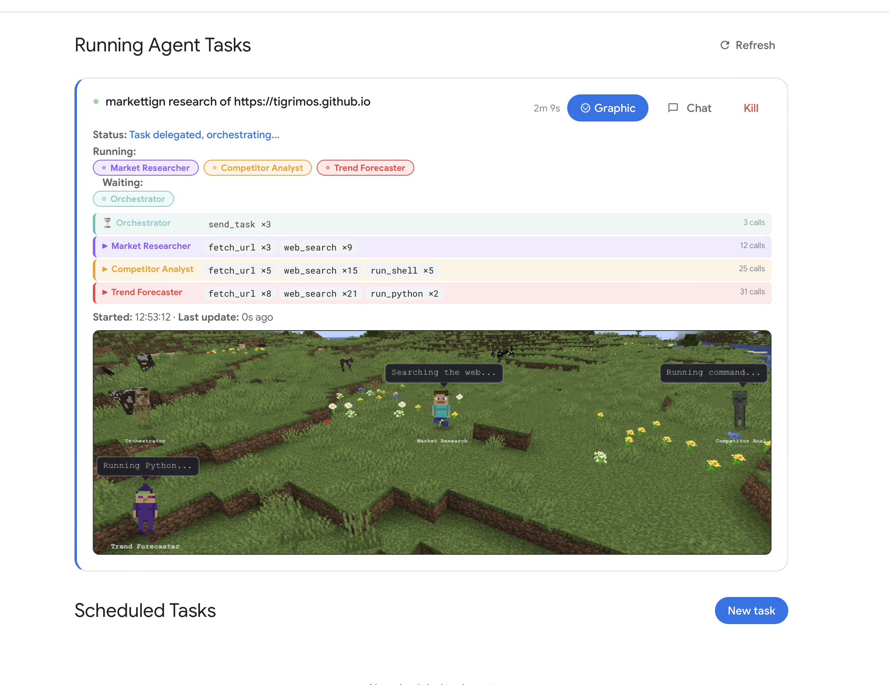
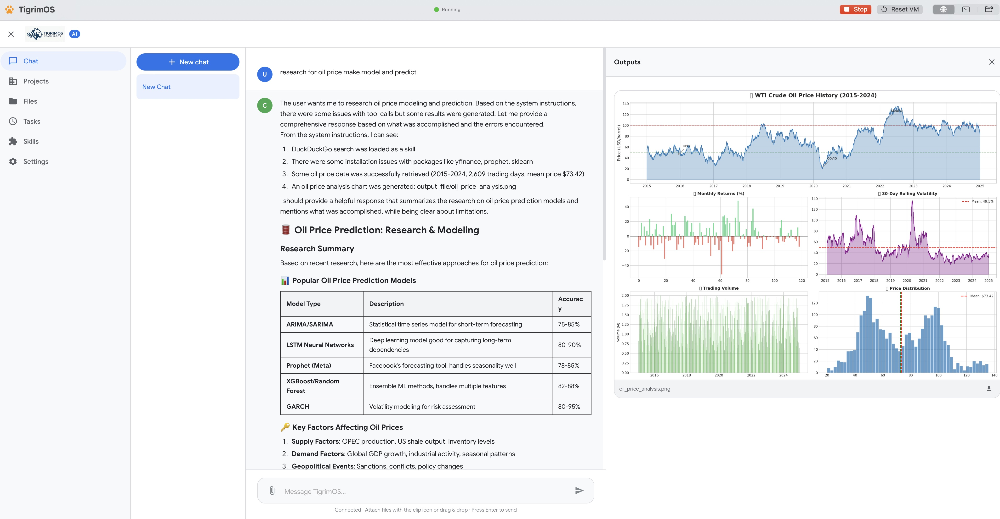
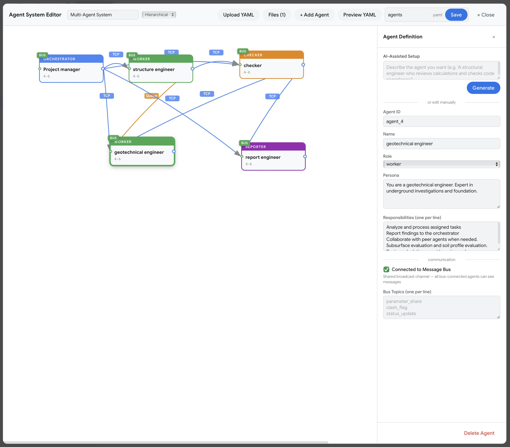

Self-hosted AI desktop application with parallel multi-agent orchestration, secure sandboxing, and a skill marketplace. Your data never leaves your machine. No Docker required.



Cloud AI tools are powerful — until they hit the wall of privacy, cost, and control.
Regulated industries can't send proprietary code, patient data, or financial records to third-party servers. No audit trail, no deal.
Multiple AI subscriptions stack up. A heavy coding session can blow through your budget overnight — and you only see it after the fact.
Team-wide Copilot or ChatGPT subscriptions add up fast. Switching providers means retraining workflows and losing integrations.
Traveling, remote locations, secure facilities — cloud AI simply doesn't work when you can't connect.
Closed-source tools give you what they give you. No way to add domain-specific skills, connect internal APIs, or adapt to your workflow.
Per-seat AI licenses for the whole team are expensive. When budgets tighten, AI tools are the first to get cut.
Choose the AI provider that fits your budget. Use premium cloud APIs when you need top performance, or run completely free on local models.
Use open-source models on your own hardware. Zero API costs, zero data sharing, full privacy.
Assign different providers per agent. Use a powerful cloud model for planning and a free local model for execution.
Connect any OpenAI-compatible API for maximum capability. Use your own keys — no markup, no middleman.
A complete workspace where your agent teams build, reason, and execute — without ever leaving your infrastructure.
7 orchestration topologies and 4 communication protocols. Agents work simultaneously on different parts of your problem — mesh networking, P2P swarm governance, and YAML-exportable workflows.
Web search, Python execution, React rendering, shell commands, file operations, skills, sub-agents — all sandboxed and ready to use out of the box.
Assign different models per agent — OpenAI-compatible APIs, Claude Code CLI, Codex CLI, or local LLMs via Ollama, llama.cpp, and LM Studio. One team, many brains.
Connect any Model Context Protocol server — Stdio, SSE, or StreamableHTTP. Extend your agents' toolbox with external services, databases, and APIs.
Full xterm.js terminal with root access to the Ubuntu sandbox. Install packages, manage services, run CLI tools — all from the browser with color, tab completion, and cursor support.
Install pre-built AI skills from the marketplace or create your own. Package domain-specific capabilities and share them across your organization.
Smart context compression, sliding window management, and checkpoint recovery. Your agents keep working through complex, multi-hour tasks without losing context.
Choose the right topology for every task. Click each pattern to see how agents connect and collaborate.
Every agent can talk to every other agent directly. Any node can request help from any peer — no bottleneck, full redundancy. Best for collaborative problem-solving where context is shared.
Set up TigrimOS as a self-hosted web application. Give every team autonomous AI agents — from business ops to R&D — all on your own infrastructure.
Agent teams that code, review, test, and deploy in parallel. Claude Code + Codex CLI as autonomous coders inside your swarm.
Run experiments, analyze data, and synthesize literature with full Python/numpy/pandas. Sensitive data never leaves your servers.
Automate reports, process documents, and run strategic analysis. AI agents handle routine work so your team focuses on decisions.
Full data sovereignty, air-gapped deployments, and org-wide skill sharing. MIT licensed — no vendor lock-in, no per-seat fees.
Extend your agent swarm beyond a single machine. TigrimOS instances connect and collaborate across your network — LAN, VPN, or WAN — via a simple REST API with Bearer token authentication.
Point any TigrimOS instance at another over the network. Submit tasks via REST API with a Bearer token — works across LAN, VPN, or public internet.
Each instance generates a unique remote token. All cross-machine calls are authenticated — no complex certificates, just enable Remote Mode and share the token.
Mix Mac, Linux, and Windows nodes freely. GPU-heavy inference on a rack server, coding agents on a laptop — orchestrated as one swarm.
Poll running tasks for live status updates, progress logs, and elapsed time. Build dashboards or automation scripts on top of the simple polling API.
Remote tasks run through the same multi-agent orchestration as local tasks. All 7 topologies, 16 tools, and model configs are available across machines.
Remote tasks execute inside the same sandboxed environment as local tasks. The remote caller never gets host access — only task results come back.
POST /api/remote/task with your Bearer token
Every AI operation runs inside an isolated Ubuntu sandbox. Your host system is protected by default.
macOS: Virtualization.framework VM. Windows: WSL2. AI code physically cannot access your host.
Host files hidden from AI. Share only what you choose — read-only by default.
Sandbox isolated from host network. No unexpected outbound connections.
Native OS-level virtualization. Lighter, faster, zero Docker dependency.
Free and open source. MIT licensed. No account required.
Apple Silicon & Intel
MIT Licensed
# Clone the repo
git clone https://github.com/Sompote/Tigrimos.git
cd TigrimOS
# Install qemu (macOS)
brew install qemu
# Build
swift build -c release
./Scripts/build.sh silicon # or: intel, allDeploy autonomous AI agent teams that run entirely on your infrastructure. Free, open source, and secure by design.